A temporada 2026/27 colocou novamente três estádios tradicionais no mapa da primeira divisão espanhola. Racing Santander, Deportivo La Coruña e Málaga conquistaram o acesso, levando El Sardinero, Riazor e La Rosaleda de volta à elite. A mudança reforçou um campeonato no qual algumas arenas ultrapassam um século de existência enquanto outras ainda não chegaram aos 15 anos. O movimento entre as divisões também pode ser acompanhado no panorama de promovidos e rebaixados.
San Mamés: a nova Catedral preservou a identidade do Athletic
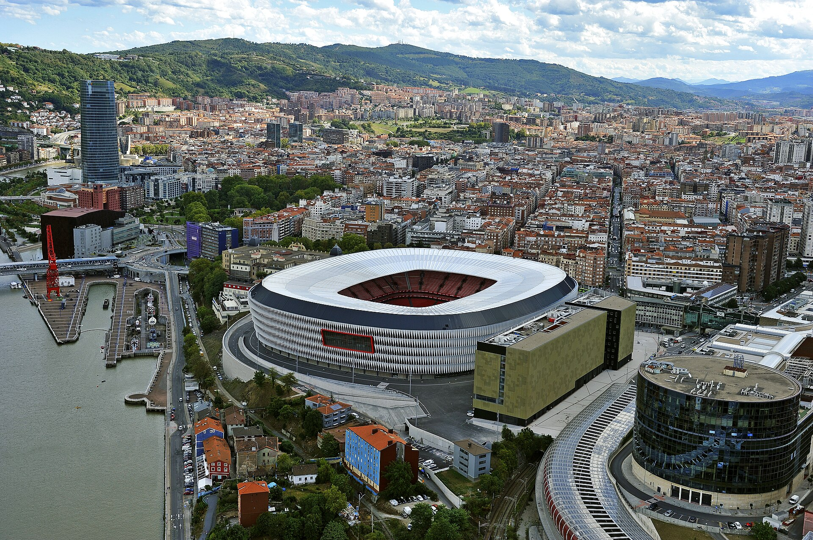
O Athletic Club trocou o antigo San Mamés por uma nova arena em 2013, mas praticamente não mudou de endereço em Bilbao. A reconstrução preservou justamente aquilo que parecia mais difícil de reproduzir: a ligação territorial de uma das casas mais simbólicas do futebol espanhol. O atual San Mamés comporta 53.331 pessoas e continua carregando o apelido de “Catedral”, herdado do estádio anterior, utilizado de 1913 a 2013.
Na base histórica consultada, o Athletic já aparece com 313 partidas como mandante no novo San Mamés. O estádio acumula jogos de La Liga, Copa do Rei, Champions League e Europa League. É um número ainda pequeno diante do século vivido no antigo campo, mas que já transformou a nova arena em parte consolidada da história do clube.
Riyadh Air Metropolitano: a nova era do Atlético
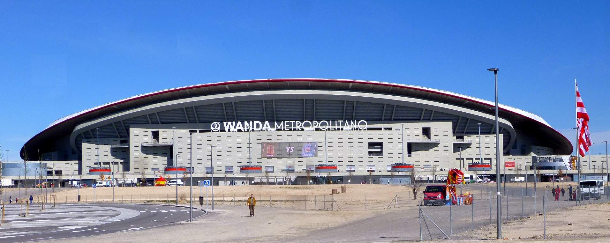
O Atlético de Madrid inaugurou sua casa atual em 16 de setembro de 2017, vencendo o Málaga por 1 a 0. O estádio substituiu o Vicente Calderón e levou o clube para o nordeste de Madri, próximo à M-40, ao aeroporto e à região da IFEMA. Hoje chamado Riyadh Air Metropolitano, tem capacidade de 70.692 espectadores e recebeu, entre outros grandes eventos, a final da Champions League de 2019.
El Sadar: mais de 960 partidas em Pamplona
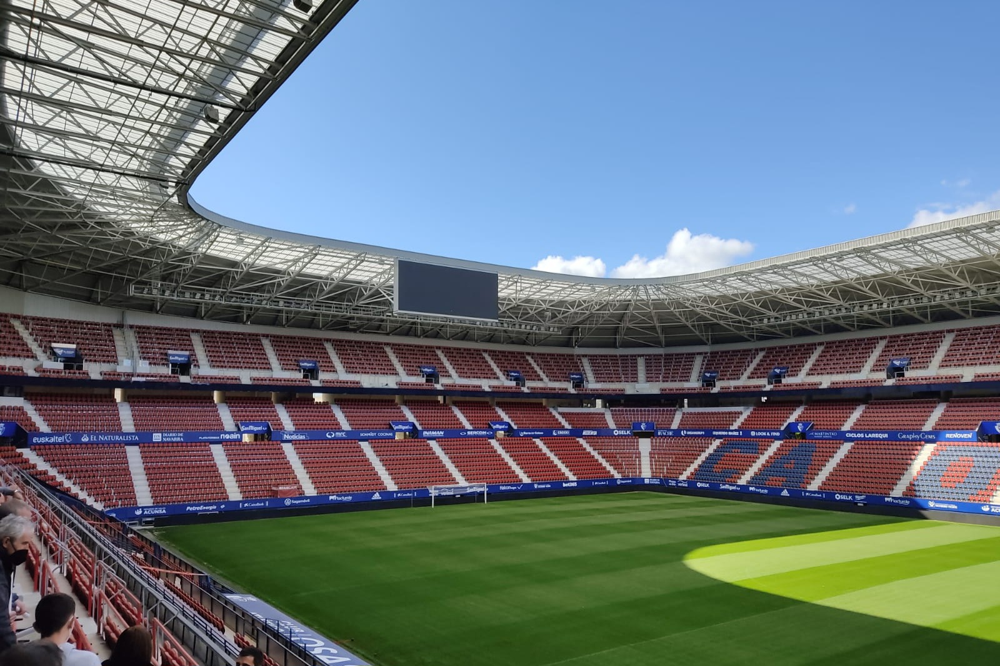
O Osasuna joga no El Sadar desde 1967. A arena de Pamplona foi inaugurada em 2 de setembro daquele ano e, depois de reformas importantes, chega à era atual com capacidade para 23.576 espectadores. Não está entre os maiores estádios da Espanha, mas a proximidade das arquibancadas e a identificação com Navarra fazem do local uma das casas mais reconhecíveis do campeonato.
A longevidade aparece nos números: os dados registram 962 partidas do Osasuna como mandante em El Sadar. O conjunto inclui principalmente jogos da primeira e da segunda divisões, além de Copa do Rei e aparições europeias. Só os compromissos classificados pela base como primeira divisão representam 676 partidas realizadas no estádio, mostrando quanto da trajetória do clube na elite passou pelo mesmo endereço.
Balaídos: quase um século em Vigo
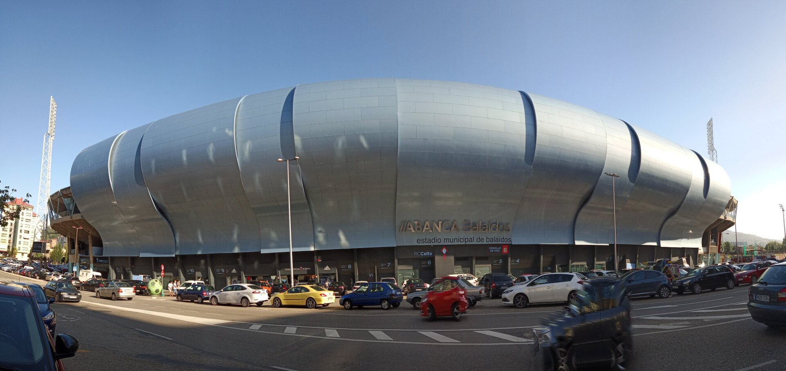
Balaídos foi inaugurado em 30 de dezembro de 1928 e se tornou inseparável da história do Celta. Localizado em Vigo, o estádio atravessou sucessivas reformas e vive uma nova transformação estrutural, o que faz sua capacidade operacional variar durante as obras. A própria idade da arena já dá dimensão de sua importância: são quase cem anos recebendo diferentes gerações do clube galego.
Poucos estádios da atual La Liga têm um volume semelhante de partidas do mesmo time. O clube contabiliza 1.444 jogos como mandante em Balaídos. O arquivo geral do estádio supera 1.500 compromissos porque inclui também partidas do Celta Fortuna e outros eventos. Dentro do recorte competitivo, aparecem mais de mil jogos de primeira divisão no estádio.
Mendizorroza: a casa centenária do Alavés
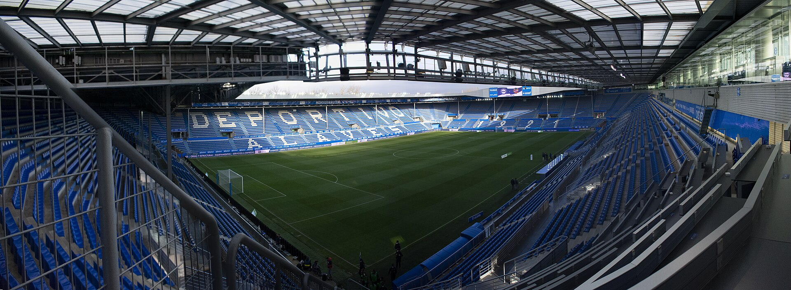
Inaugurado em 27 de abril de 1924, Mendizorroza é outro integrante do grupo de estádios centenários da primeira divisão. Localizado em Vitoria-Gasteiz, tem capacidade para 19.840 espectadores e mantém uma escala muito diferente dos grandes palcos de Madri e Barcelona. Essa dimensão mais compacta acompanha a própria identidade territorial do Deportivo Alavés.
A base histórica registra 813 partidas do Alavés como mandante em Mendizorroza. Há jogos de primeira e segunda divisões, Copa do Rei e até da campanha europeia do clube, que chegou à histórica final da Copa da UEFA de 2001. O estádio acumula 830 partidas catalogadas no total porque também serviu pontualmente como casa para outras equipes.
Martínez Valero: o estádio que entrou para a história das Copas
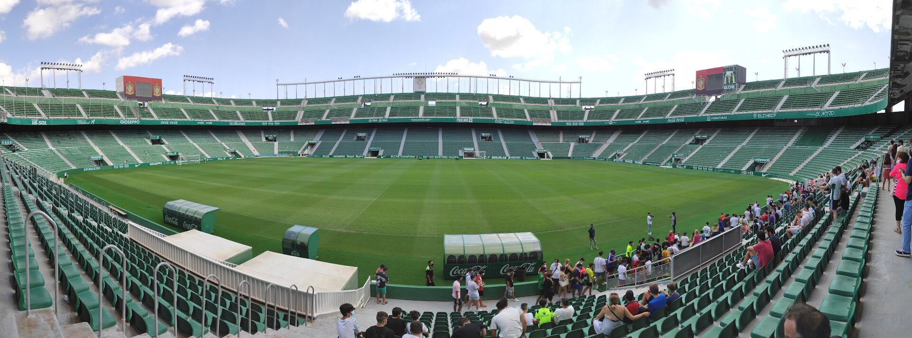
O Martínez Valero foi inaugurado em 8 de setembro de 1976, com empate por 3 a 3 entre Elche e a seleção do México. A arena fica fora da zona mais central da cidade e foi projetada com bons acessos rodoviários, próxima à ligação com Alicante. Com capacidade registrada de 33.732 espectadores, é uma casa muito maior do que a população de várias arenas utilizadas por clubes de dimensão esportiva semelhante.
Seu capítulo internacional mais conhecido veio na Copa do Mundo de 1982. Foi ali que a Hungria derrotou El Salvador por 10 a 1, a maior goleada da história dos Mundiais masculinos. Na trajetória do Elche, contabiliza 575 partidas do clube como mandante no estádio, espalhadas principalmente entre primeira divisão, segunda divisão e Copa do Rei.
Spotify Camp Nou: uma história em plena transformação
Inaugurado em 24 de setembro de 1957, o Camp Nou entrou em uma nova fase com a profunda reconstrução do complexo do Barcelona. Em março de 2026, a abertura de uma nova etapa das obras elevou a capacidade disponível para 62.652 espectadores. Esse número ainda é provisório: o projeto completo prevê uma arena para aproximadamente 105 mil pessoas.
Mesmo com o período em que o Barcelona precisou mandar seus jogos no Estadi Olímpic de Montjuïc, o peso estatístico do Camp Nou permanece gigantesco. É registrado 1.639 partidas do time principal blaugrana como mandante no estádio. No conjunto completo da arena, são 1.680 jogos catalogados e 1.191 compromissos classificados como primeira divisão. A transformação atual acrescenta um novo capítulo à história e às reformas do Camp Nou.
Coliseum: a ascensão do Getafe passou por uma mesma casa
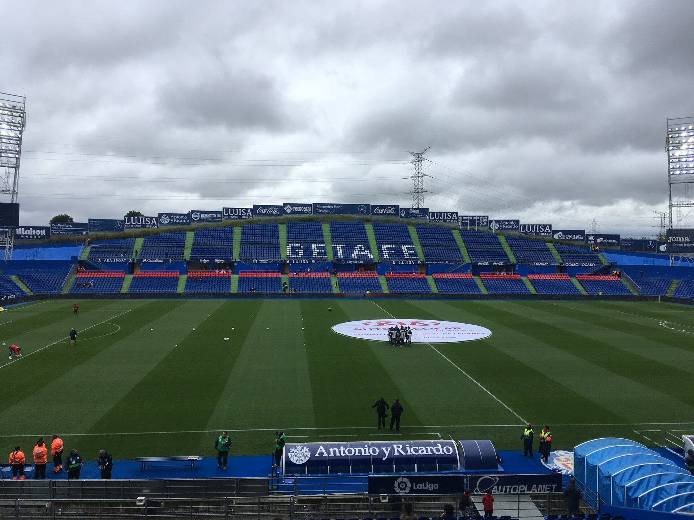
O Coliseum foi inaugurado em 1998 e acompanha praticamente toda a escalada contemporânea do clube. Situado no município de Getafe, na região metropolitana de Madri, o estádio tem capacidade para 16.500 espectadores. Foi ali que um clube ainda distante da primeira divisão construiu a trajetória que o levaria à elite e posteriormente às competições europeias.
São 452 partidas do Getafe como mandante no Coliseum. O dado chama atenção pela distribuição: 399 jogos catalogados no estádio são de primeira divisão, reflexo da estabilidade conquistada pelo clube a partir dos anos 2000. Também há Copa do Rei, segunda divisão e Europa League na trajetória da arena.
Ciutat de València: mais 500 jogos do Levante
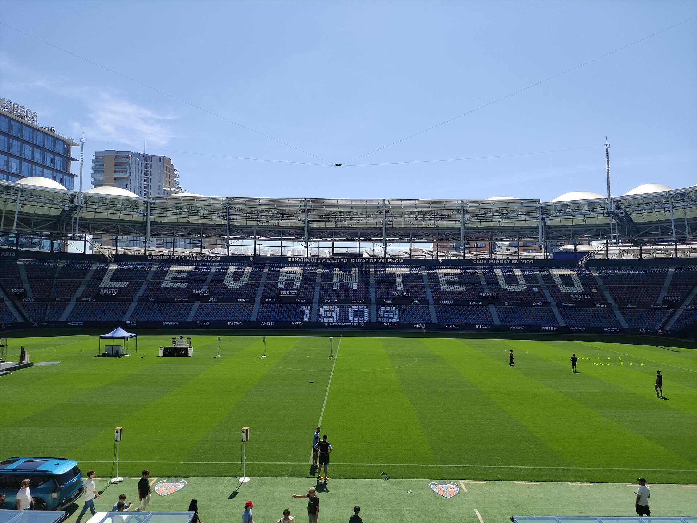
O Levante utiliza o Ciutat de València desde 1969. Inaugurado em 29 de setembro daquele ano, o estádio comporta 24.700 espectadores e está inserido na cidade de Valência, mas longe de se confundir com Mestalla: cada um representa uma identidade esportiva própria dentro do mesmo espaço urbano.
São 548 partidas do Levante registradas como mandante no Ciutat de València. A história do clube no local passou por longos períodos na segunda divisão antes da maior presença na elite no século XXI. No banco estatístico do estádio, aparecem 284 jogos de primeira divisão, 183 de segunda e 60 de Copa do Rei, além de partidas continentais.
La Rosaleda: Málaga recupera uma das casas históricas da elite
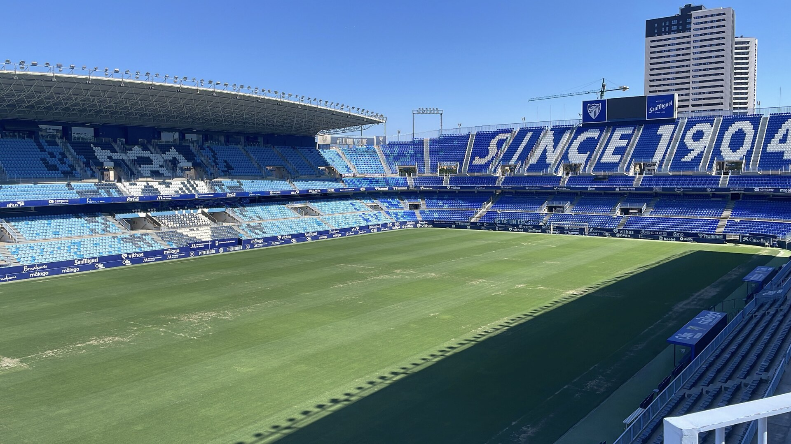
La Rosaleda recebeu seu primeiro jogo em abril de 1941 e foi oficialmente inaugurado em 14 de setembro do mesmo ano, quando o então CD Málaga venceu o Sevilla por 3 a 2. Localizado na região de Martiricos, o estádio tem capacidade para 30.044 torcedores e foi ampliado antes da Copa do Mundo de 1982, além de passar por uma ampla remodelação entre 2000 e 2006.
São registrados atualmente 671 partidas do Málaga CF, clube fundado em 1994, como mandante em La Rosaleda. O antigo CD Málaga, antecessor histórico que utilizou o estádio durante décadas, aparece separadamente com outros 579 jogos. Somados ao uso o arquivo da arena já supera 1.300 partidas catalogadas.
El Sardinero: o Racing voltou à elite com quase 800 jogos na arena atual
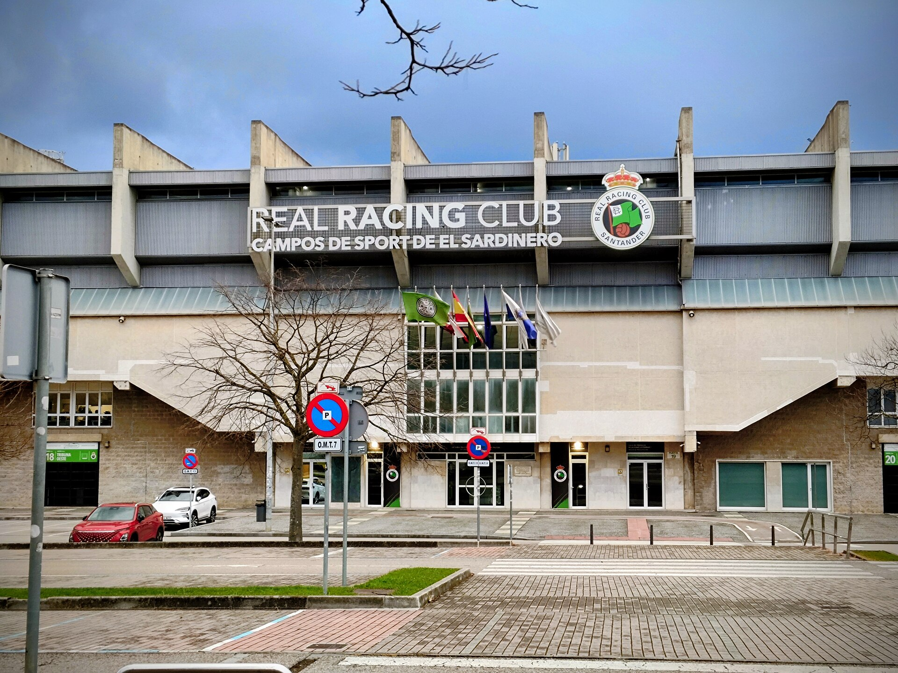
Santander recuperou um palco tradicional da primeira divisão com o acesso do Racing. O atual Campos de Sport de El Sardinero foi inaugurado em 20 de agosto de 1988, substituindo o antigo estádio de mesmo nome, utilizado desde 1913. A casa atual tem capacidade para 22.514 pessoas e fica na região de El Sardinero, próxima à faixa costeira da cidade.
O registro de 792 partidas do Racing como mandante no estádio atual. São 349 jogos de primeira divisão catalogados, além de 243 da segunda, 126 da antiga Segunda B e compromissos de Copa do Rei e torneios europeus. É uma contagem especialmente útil porque não mistura o atual Sardinero com a arena demolida em 1988.
Vallecas e Butarque: o Rayo vive uma situação excepcional em 2026/27
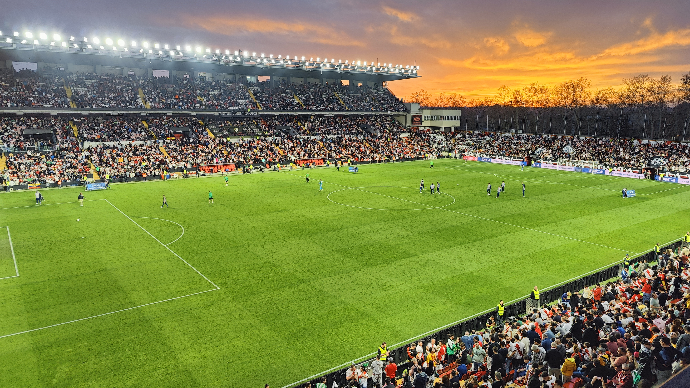
A casa histórica do Rayo é o Estadio de Vallecas, inaugurado em 1976 e com capacidade registrada de 14.708 espectadores. Inserido diretamente no bairro de Vallecas, em Madri, ele representa um modelo quase oposto ao das grandes arenas periféricas: pequeno, urbano e profundamente ligado à comunidade que cerca o clube. São contabilizadas 681 partidas do Rayo como mandante no estádio, incluindo 433 da primeira divisão.
A temporada 2026/27, porém, tem uma particularidade. Problemas de segurança levaram à necessidade de intervenções em Vallecas e obrigaram o clube a utilizar temporariamente o Estádio Municipal Ontime Butarque, em Leganés. Em 15 de setembro, por exemplo, o próprio Rayo confirmou Butarque como sede alternativa de sua partida contra o Espanyol. Portanto, a mudança não representa abandono definitivo de Vallecas, mas uma solução provisória enquanto a arena histórica permanece indisponível.
Riazor: mais de 1.300 partidas do Deportivo diante do Atlântico
O retorno do Deportivo também recoloca Riazor na elite. O estádio atual foi inaugurado em 1944 no mesmo enclave em que já existia o antigo campo do clube. Localizado em La Coruña e muito próximo da orla marítima, tem capacidade para 32.490 espectadores e é um dos estádios espanhóis cuja relação com a paisagem da cidade é mais evidente.
O registro de 1.312 partidas do Deportivo como mandante em Riazor. O volume inclui 743 jogos de primeira divisão, 324 de segunda, 108 de Copa do Rei e uma parcela importante de noites europeias: 31 partidas de Champions League aparecem no arquivo do estádio, além de compromissos da antiga Copa da UEFA.
RCDE Stadium: o Espanyol recuperou uma casa própria em 2009
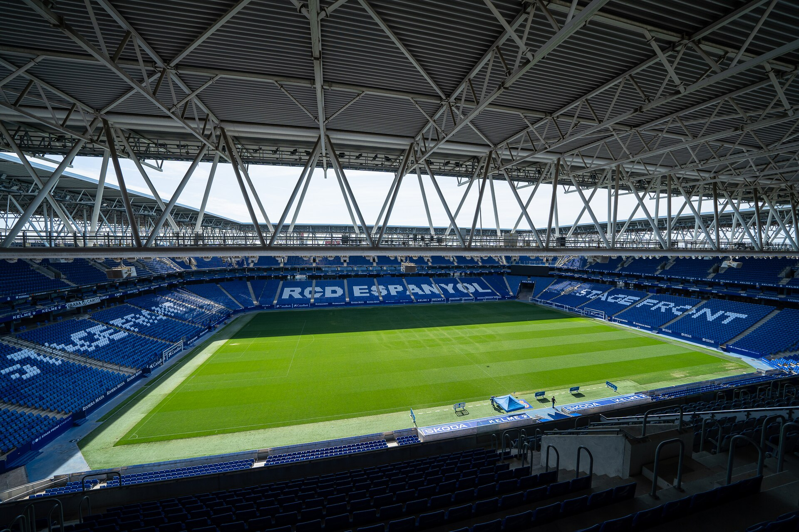
Depois de anos atuando no Estádio Olímpico de Montjuïc, o Espanyol inaugurou sua nova casa em 2 de agosto de 2009 com uma vitória por 3 a 0 sobre o Liverpool. Construído entre Cornellà de Llobregat e El Prat de Llobregat, o RCDE Stadium foi pensado como uma arena moderna e própria, com capacidade próxima de 38 mil espectadores e ampla cobertura das arquibancadas.
Já contabiliza 360 partidas do Espanyol como mandante na arena. Dessas, a maior parte pertence à primeira divisão, mas o estádio também testemunhou temporadas na segunda, partidas de Copa do Rei, playoff de acesso e Europa League. Em menos de duas décadas, já concentrou uma parcela relevante da história moderna do clube.
La Cartuja: a casa provisória de um Betis em reconstrução
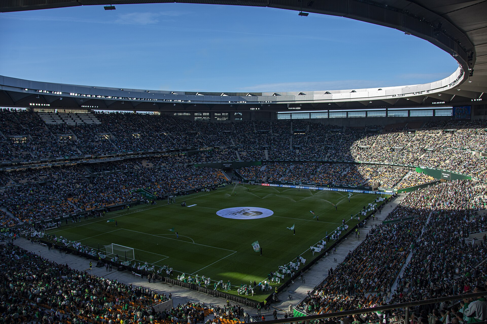
O estádio tradicional do Betis é o Benito Villamarín, mas ele não é a casa utilizada pelo clube na temporada 2026/27. Desde 2025/26, a equipe atua provisoriamente no Estadio La Cartuja enquanto o Villamarín passa por uma ampla remodelação. Situada ao norte de Sevilha, La Cartuja foi inaugurada em 5 de maio de 1999 e, após sua ampliação, possui capacidade de 70 mil espectadores.
A relação bética com a arena, portanto, é bem mais curta. Com 33 partidas do Betis como mandante em La Cartuja, número que inclui a atual residência provisória e utilizações anteriores do estádio pelo clube. A própria arena tem uma história muito mais ampla como palco de finais da Copa do Rei, competições internacionais, atletismo e eventos culturais.
Santiago Bernabéu: quase 1.900 jogos
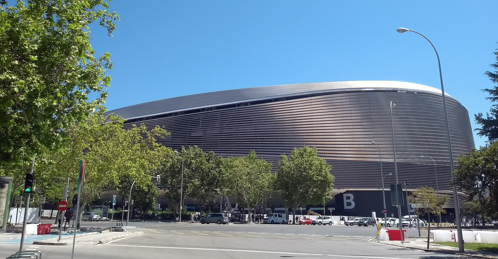
O Santiago Bernabéu foi inaugurado em 14 de dezembro de 1947, inicialmente como Nuevo Chamartín. O Real Madrid venceu o Belenenses por 3 a 1 no amistoso de abertura, e Barinaga marcou o primeiro gol da nova arena. Décadas depois, o estádio passou por uma transformação estrutural que acrescentou cobertura retrátil, gramado retrátil e novas possibilidades de uso comercial sem retirar a arena de seu endereço histórico no Paseo de la Castellana.
O Real Madrid aparece com 1.850 partidas como mandante no estádio. A arena também recebeu jogos de equipes reservas, partidas neutras e grandes eventos internacionais, razão pela qual o total geral do estádio ultrapassa dois mil compromissos catalogados. A dimensão dessa trajetória aparece também na história e reforma do Santiago Bernabéu.
Reale Arena: Anoeta deixou as pistas para trás
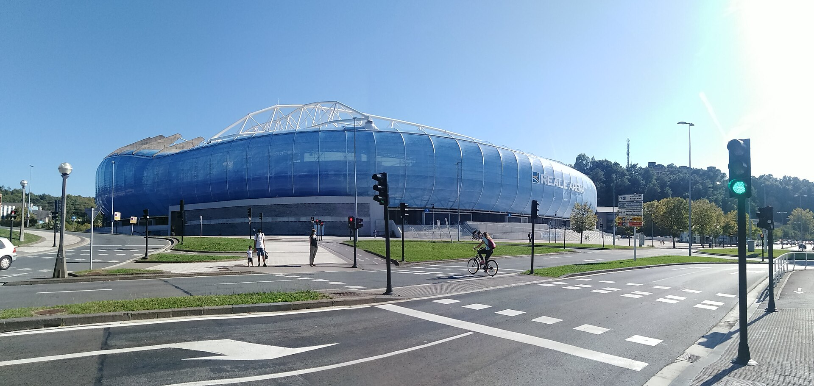
A Real Sociedad mudou-se para Anoeta em 1993, deixando o antigo Atocha. Durante muitos anos, a pista de atletismo criou uma distância incomum entre arquibancadas e gramado. Esse cenário mudou com a reforma iniciada em 2017: as pistas foram eliminadas, a capacidade aumentou e, em 14 de setembro de 2019, o clube apresentou o estádio completamente remodelado e com a denominação Reale Arena.
O estádio contabiliza 716 partidas da Real Sociedad como mandante. A capacidade é de 40 mil pessoas. O estádio acumula 578 jogos classificados como primeira divisão, além de Copa do Rei, Champions e Europa League, embora parte do total geral pertença também à equipe B.
Ramón Sánchez-Pizjuán: mais de 1.300 jogos do Sevilla
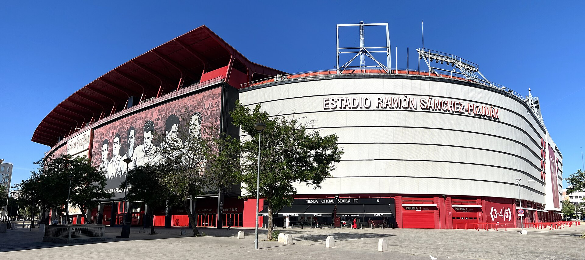
Inaugurado em 7 de setembro de 1958, o Ramón Sánchez-Pizjuán é uma das casas mais tradicionais do futebol espanhol. Com capacidade de 43.864 espectadores, o estádio acompanha o Sevilla há quase sete décadas e se tornou particularmente associado às grandes noites europeias do clube neste século.
São 1.384 partidas do time do Sevilla como mandante no Sánchez-Pizjuán. O estádio soma mais de mil jogos de primeira divisão no conjunto de sua história, além de quase uma centena de Copa do Rei, 75 de Europa League e 40 de Champions League. É um volume que coloca a arena no grupo dos palcos mais utilizados pelos atuais integrantes da La Liga.
Mestalla: mais de um século e quase 2 mil jogos do Valencia
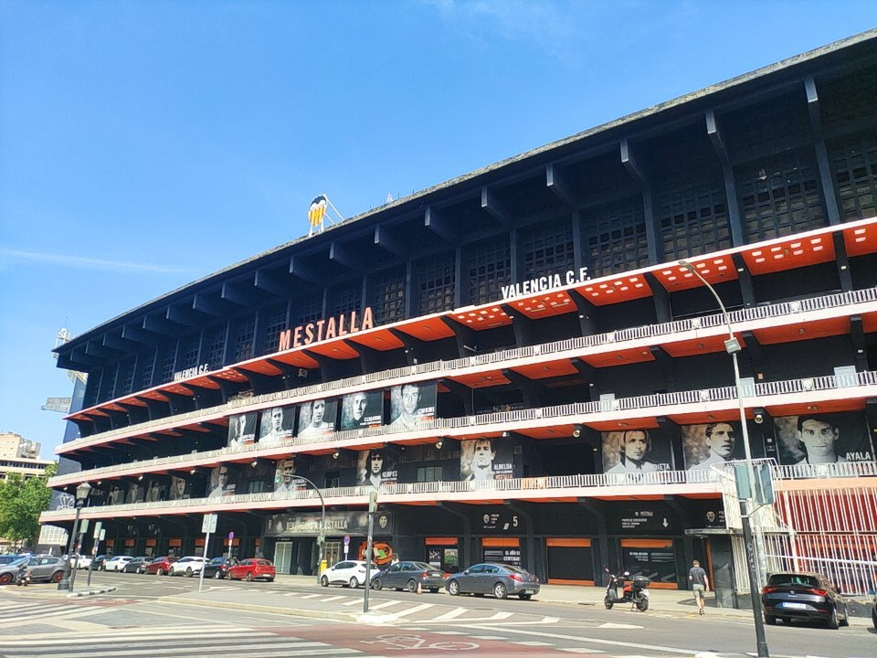
Mestalla foi inaugurado em 20 de maio de 1923 com um amistoso entre Valencia e Levante. A arena permanece no mesmo tecido urbano da cidade e tem capacidade oficial atual de 49.419 espectadores. O nome vem da antiga acequia de Mestalla, canal de irrigação que passava junto ao local. Mais de cem anos depois, o estádio continua sendo a principal casa da história valencianista.
Nenhum clube desta edição da La Liga chega tão perto de duas mil partidas documentadas no mesmo estádio quanto o Valencia. São 1.978 jogos do time como mandante em Mestalla. No total da arena, há 2.107 partidas catalogadas, incluindo utilização pela equipe reserva e alguns compromissos de outros clubes. A primeira divisão responde por mais de 1.500 jogos no conjunto do registro do estádio.
Estadio de la Cerámica: um estádio centenário no coração de Vila-real
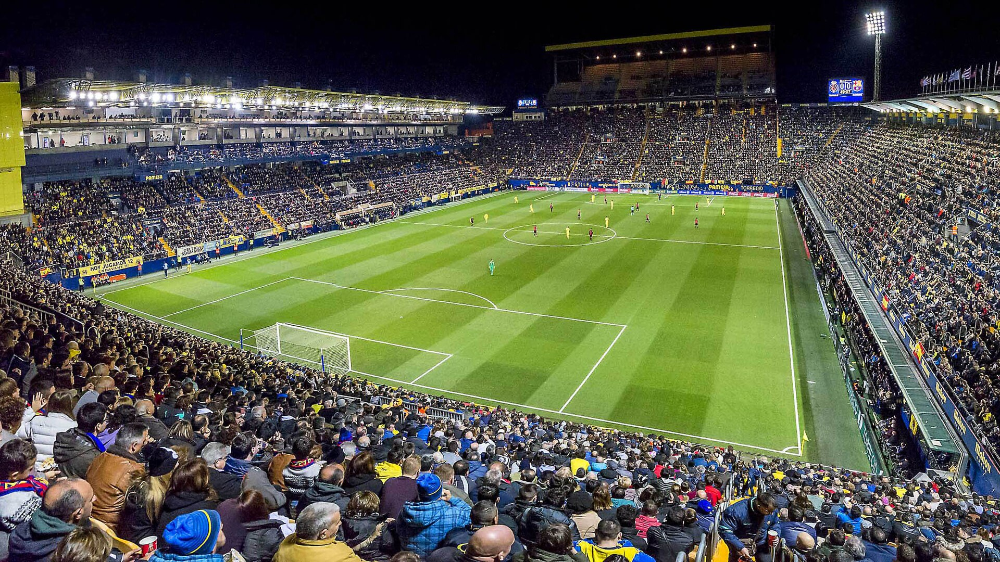
A casa do Villarreal foi inaugurada em 17 de junho de 1923. Primeiro chamou-se Campo del Villarreal, passou a ser conhecida como El Madrigal a partir de 1925 e adotou o nome Estadio de la Cerámica em 2017, reforçando a conexão com uma das principais atividades econômicas da região de Castellón. Com 23.173 lugares, fica no centro de Vila-real, característica que mantém o estádio integrado ao cotidiano de uma cidade relativamente pequena para os padrões da elite europeia.
São 699 partidas do Villarreal como mandante na arena. O crescimento esportivo do clube aparece dentro desse total: além de 492 jogos de primeira divisão catalogados no estádio, há 67 de Europa League e 27 de Champions League. Poucos exemplos ilustram tão bem a transformação de uma casa local em palco continental sem abandonar o endereço construído há mais de um século.
Dos bairros tradicionais às arenas reformadas: o mapa da La Liga continua mudando
Os estádios da La Liga 2026/27 mostram que não existe um único modelo de casa no futebol espanhol. Mestalla e o Estadio de la Cerámica passaram dos cem anos; Balaídos se aproxima dessa marca; Bernabéu, Riazor e La Rosaleda atravessaram gerações; enquanto San Mamés, Metropolitano e RCDE Stadium representam substituições modernas de antigos palcos históricos. Essa combinação entre arenas centenárias, estádios reconstruídos e casas modernas também aparece entre os estádios da Premier League, formando dois dos mapas de arenas mais tradicionais e diversos do futebol europeu.
Também há uma temporada de transição. O Barcelona voltou a receber público no Spotify Camp Nou enquanto as obras continuam, o Betis utiliza La Cartuja durante a reconstrução do Benito Villamarín e o Rayo precisou deixar Vallecas provisoriamente. Ao mesmo tempo, os acessos de Racing, Deportivo e Málaga devolveram à primeira divisão três arenas fortemente associadas à memória do campeonato.
Os números ajudam a dimensionar essas diferenças. O Valencia se aproxima de 2 mil partidas catalogadas em Mestalla, Barcelona e Real Madrid ultrapassam 1.600 jogos de seus times em Camp Nou e Bernabéu, enquanto casas mais recentes, como o atual San Mamés e o RCDE Stadium, ainda contam sua trajetória em algumas centenas. Mais do que capacidade ou modernidade, é essa continuidade entre clube, cidade e arquibancada que transforma os estádios espanhóis em parte fundamental da própria história da La Liga.